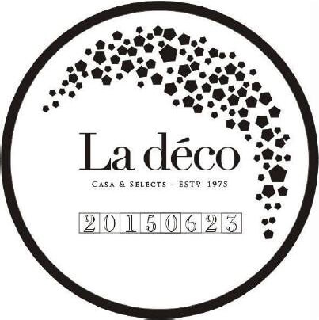

來電預約
來電預約，帶著全家大小與另一伴到工廠遊玩吧!
直接到工廠，諮詢最源頭製造端是最當代的作法，
『工業園居家計畫』工廠也有舒適的傢俱展示間與貴賓洽談區，
完整提您最完整的介紹服務，
實際體驗款款傢俱的經典風貌。
我們重視每個客戶的參觀品質，
在同一時間內僅接待一組客戶，
請來電預約參觀時間，謝謝。
S：AM10:00~PM09:00
T：886-2-8695-1353
A：新北市汐止區南陽街83之3號
P：門口皆可停車
C：MasterCard / VISA
E：
線上客服
| 姓名： | |
| 電話： | |
| E-mail： | |
| 我想詢問： | |
訂製傢俱
> 解說品牌服務範圍及產品
> 傢俱製程與原料認識
> 依客戶需求提供空間設計服務
> 確認預算金額，產品建議
> 傢俱風格及空間設計提案
> 確認所需服務項目
> 雙方協調交貨時間
> 服務項目報價確認
> 開始繪製傢俱設計圖
> 空間設計師繪製設計圖
> 確認並開始製作
> 用印保固認證
> 確認產品出貨日期
> 運送到府協助定位
> 完成專案訂製服務
隱形技術
保修服務

終身保修
在La Déco產品離開工廠前，必須經過成嚴格審查、由接單人、監督人與單位經理一一確認後，
並蓋上製造日印章來確認保固才會獲立最終出貨批准，全商品在正常使用無人為或其他外力破壞的情況下，可享兩年保固。
即使是人為或者超過保固時間，La Déco仍享有終生保修服務、超過保固年限者，則依毀損情況僅酌量收取維修及運費。
常見問題